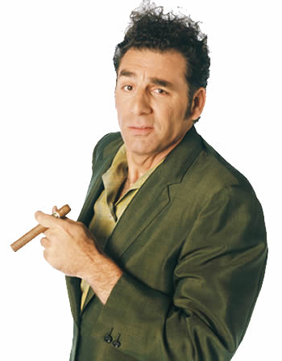

About Cosmo Kramer
Kramer has many conflicting personality traits. Described by an art patron as "a loathsome, offensive brute," he is often shallow, callous, and indifferent. On the other hand, he is often caring and friendly, going out of his way to get his friends to help others and to do the right thing even when they don't want to. Kramer is known for his extreme honesty and lack of tact; in "The Nose Job", he tells George's girlfriend that she "needs a nose job". Instead of being horrified, many of these people end up thanking Kramer for his candor. Kramer never gets into trouble for it, but often his friends do. He also gets his friends into trouble by talking them into things such as parking illegally in a handicapped space ("The Handicap Spot") or urinating in a parking garage ("The Parking Garage").
Kramer is perhaps the most social of the four main characters, and seems to have more friends and associates than any of the others, some of whom are just as eccentric if not more so than he is. This includes Bob Sacamano, an oft-referred to, but never-seen character, as well as Newman, played by Wayne Knight. Although they seem to get into many fights, Newman often participates in many of Kramer's inventions and money-making ideas. Kramer is popular with Jerry's parents: he calls them once a week, and even briefly lives in the same retirement community in Florida as they do. He participates in schemes with George's father, Frank Costanza, such as the invention of a male brassiere.
Famous Kramer Quotes
- Who's gonna turn down a Junior Mint? It's chocolate, it's peppermint, it's delicious.
- "I’m out there, Jerry. And I’m loving every minute of it!
- You know what would make a great coffee table book? A coffee table book about coffee tables! Get it?